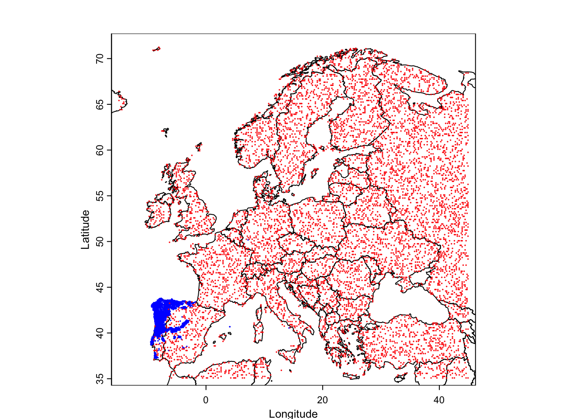
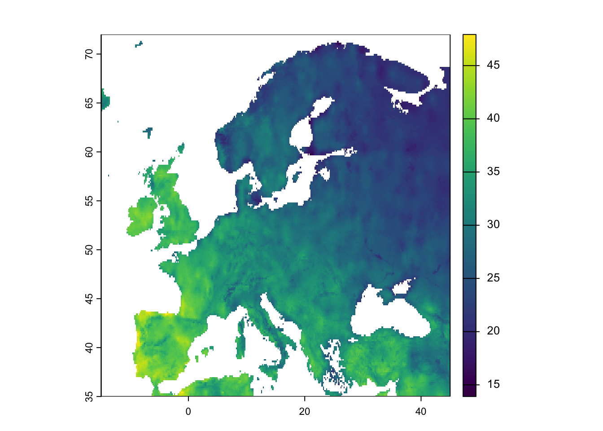
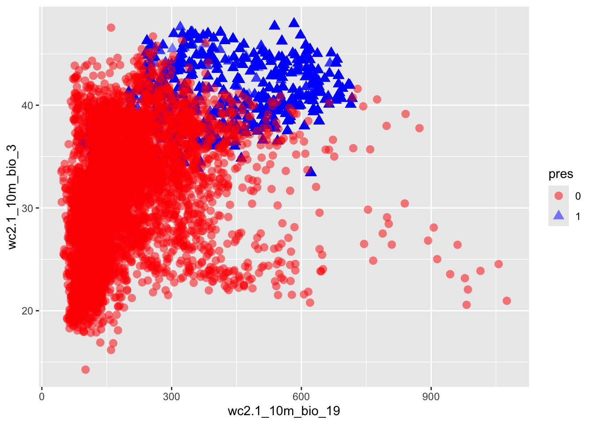

k = 50 #convection coefficient (cal/h)
a = 18 #air temperature (ºC)1 Ecophysiology and the climate space: when to bask in the sun?
We are now almost daily bombarded with news about climate change and its impacts on people and ecosystems. But how does climate mechanistically affects organisms? The basic foundations to address this question were laid out by ecophysiology research. Interestingly, at the time that some of seminal research on ecophysiology was carried out, back in the 1960’s, climate change was not yet in the radar of most people. The research was driven by the interest in the basic understanding of how biophysical conditions affect organisms. Today the knowledge gained from this research has acquired new importance. This is an area whether the mechanistic knowledge learnt from theory and experiments is now sometimes overlooked because of the massive datasets and machine learning approaches available. But let’s start with the basics.
1.1 A model for the body temperature of an animal
Animals can be divided in two big groups in regard to the way they regulate their temperature: ecoctherms and endotherms (Figure 1.1). Endotherms such as mammals and birds are able to regulate their temperature by producing heat through metabolism. Ectotherms in contrast must regulate their temperature by obtaining heat from the environment. By obtaining energy from the environment, ectotherms have lower energy demands than endotherms, which have to be burning energy all the time to keep their bodies warm. Both do have to avoid getting too hot because indeed there can bee too much from a good thing.
To build a model of the body temperature of an animal, let’s consider a lizard that is perched in a rock basking in the sun (Figure 1.2). The lizard receives heat from the direct solar radiation than can be measured in for instance calories per hour. It can also receive indirect solar radiation, reflected for instance by the ground. The lizard also exchanges heat with the surrounding air through convection. If the lizard body temperature is higher than the surrounding air temperature it will lose heat, while if the lizard body temperature is lower than it will gain heat. The rate at which this exchange of heat through convection happens depends on the body of the animal and the properties of its skin. These properties are captured in the heat transfer coefficient, which can be measured as calories per hour per degree Celsius. Similarly, the lizard can receive heat by conduction from being in contact with a warm rock, or lose heat to the rock if the rock is colder than the lizard’s body temperature. Finally the animal can lose heat through evapotranspiration, this is by transpiring water that has a cooling effect when it evaporates. I also like to think about this model as representing our own experience on the beach. We can be laying on a towel receiving heat by conduction from the sand and solar radiation from the sun. If the air temperature is warm, we can become uncomfortable in the sun and we may seek a shade to reduce the input from solar radiation, but if there is a cool brise we may be able to stay in the sun a bit longer. If the air temperature is really cold and it’s really windy our skin hair may rise to reduce the convection coefficient.
The total flow of energy into the lizard, also known as the heat exchange equation, can be written as \[f=q-k(b-a) \tag{1.1}\]
where
\(f\) is the energy flow (cal/h),
\(q\) is the quantity of heat in the solar radiation (cal/h),
\(k\) is the convection coefficient (cal/h/ºC),
\(b\) is the body temperature (ºC) and
\(a\) is the air temperature (ºC).
If the energy flow is positive, then the lizard is warming, while if it is negative then the lizard is cooling. The equilibrium1 happens when the energy flow is zero and so the the lizard is neither cooling nor warming. If we solve Equation 1.1 for equilibrium by replacing \(f\) with zero and expanding the right-hand side of the equation,
\[ 0=q-k\ b+k\ a \]
and rearranging for \(b\) we find the equilibrium body temperature that we denote with a hat,
\[ \hat{b}=q/k+a. \tag{1.2}\]
Let’s see if this equation makes sense. It says that the equilibrium body temperature is the sum of the solar radiation divided by the convection coefficient with the air temperature. So, at minimum the equilibrium body temperature is equal to the air temperature when the solar radiation is zero (e.g. during the night). But when the solar radiation is greater than zero then the equilibrium body temperature is higher than the air temperature as one would expect. How much higher? Well that depends on the convection coefficient. If the convection coefficient is very high then the body temperature is mainly determined by the air temperature. In contrast, if the convection coefficient is very low then the solar radiation can contribute significantly to the body temperature.
It’s time to start using R to explore this model. For instance, we can use R to plot the relationship between the body temperature and the solar radiation. First we create variables for the heat coefficient and the air temperature and assign some valuues:
We want to plot the equilibrium body temperature for a range of solar radiation values. So we create a vector with radiation values, for instance ranging from 0 cal/h to 1500 cal/h in steps of 500. I am going to use big letters to denote vectors in R code, in contrast with scalars which I will denote with small letters.
Q = seq(0,1500,by=500) #vector with radiation valuesNow we can write Equation 1.2 in R to produce a vector of the equilibrium body temperatures for each value of radiation.
B_eq = Q/k+a #vector with equilibrium body temperaturesLet’s examine the values of the vector, by binding the two vectors as a matrix,
rbind(Q,B_eq) [,1] [,2] [,3] [,4]
Q 0 500 1000 1500
B_eq 18 28 38 48This is nice as we can see the values of the equilibrium body temperature for each value of solar radiation. But let’s visualize this as a graph, by plotting these vectors in R,
plot(Q,B_eq,type="l")Note that we added type="l" as a parameter of the plot to have a line drawn instead of a sequence of dots in the plot.
1.2 Understanding the climate space
Another way of looking at the heat exchange equation Equation 1.1 is to look at what combinations of air temperature and solar radiation values are livable for the lizard. This is also known as the climate space of an organism. In order to explore the climate space of the lizard we need to first assess what are the maximum and minimum body temperature that the lizard can experience. Let’s assume those are respectively 36 and 24ºC and store them in R,
b_max = 36 #maximum body temperature
b_min = 24 #minimum body temperatureWe now want to solve Equation 1.1 at equilibrium for the air temperature as a function of the solar radiation and body temperature. We can do this by rearranging Equation 1.2,
\[ a=b-q/k. \tag{1.3}\]
This equation can be then used in R to calculate vectors of the maximum and minimum survivable air temperatures for each value of the solar radiation in vector Q,
A_max = b_max - Q/k #vector with maximum air temperatures
A_min = b_min - Q/k #vector with minimum air temperaturesWe can now visualize the climate space, this is, the combination of solar radiation and air temperatures in which the lizard can survive, by plotting these two equations (i.e. by plotting lines with x coordinates given by the vector Q and the y coordinates given by the vectors A_max and A_min),
plot(Q, A_max,type="l", #plots the maximum survivable air temperature
xlab="Solar radiation (cal/h)", #adds x and y axis labels to the plot
ylab="Air temperature (ºC)")
lines(Q,A_min) #adds line for the minimum survivable air temperatureLet’s paint the area between the two lines which corresponds to the climate space of the lizard. We can use the R function polygon, to which we need to give the set of x and y coordinates delimiting the climate space as vectors. For instance, the upper lower corner can be the first coordinate, being 0 for the x vector and b_min for the y vector. The right upper corner is 1500 for x and b_max-1500/k for y.
X<-c(0,0,1500,1500)
Y<-c(b_min,b_max,b_max-1500/k,b_min-1500/k)
polygon(X,Y,col="green")Now that we have the climate space we can plot on top of it some empirical data of how the conditions are in the field during the day. We can for instance consider two micro-habitats, a rock (in the sun) and a bush (in the shade). Suppose we obtain some data from temperature loggers that were installed in each micro-habitat , recording every three hours the values of temperature and radiation as tabled below.
| Time (hh:mm) | Radiation rock (cal/h) | Radiation bush (cal/h) | Temperature (ºC) |
|---|---|---|---|
| 00:00 | 150 | 150 | 18 |
| 03:00 | 150 | 150 | 13 |
| 06:00 | 800 | 450 | 10 |
| 09:00 | 1100 | 600 | 14 |
| 12:00 | 1300 | 650 | 21 |
| 15:00 | 1200 | 650 | 24 |
| 18:00 | 800 | 350 | 22 |
| 21:00 | 400 | 200 | 20 |
We can overlay these values of temperatures and radiations on the plot to understand which microhabitat should the lizard choose at each time of the day. First we create a vector for each column of Table 1.1. Note that we must enclose the times of the day in commas as they are strings. We also append at the end of the vector the values for 0:00 in order to close the lines (otherwise there would be a gap between 21:00 and 0:00).
#Times of the day
T <- c("00:00","03:00","06:00","09:00",
"12:00","15:00","18:00","21:00","00:00")
#Solar radiation in the rock habitat
Rock_q <- c(150,150,800,1100,1300,1200,800,400,150)
#Air temperature in the rock habitat
Rock_a <- c(18,13,10,14,21,24,22,20,18)
#Solar radiation in the bush habitat
Bush_q <- c(150,150,450,600,650,650,350,200,150)
# Air temperature in the bush habitat
Bush_a <- c(18,13,10,14,21,24,22,20,18)We overlay these vectors in the figure by invoking the function lines(Xcoor,Ycoord) for each micro-habitat. We add labels to each point to show the correspondence between each point and the time of the day.
lines(Rock_q,Rock_a,col="orange")
text(Rock_q,Rock_a,T)
lines(Bush_q,Bush_a,col="blue")
text(Bush_q,Bush_a,T)1.3 From ecophysiological models to species distribution models
In the previous section we developed a simple mechanistic model for the climate space of an organism. This is a micro-habitat level climate space. But one can also infer the climate space from the distribution of a species at the macro-habitat level. They are different but they are conceptually similar. The inference of such macro climate space is an area where species distribution models excel. The idea is relatively simple. One start with a bunch of locations of a species in space.




1.4 Computational Lab 1: Least squaring the climate
1.5 Statistical confrontation: Linear regression
The concept of equilibrium is very important in ecological theory. It is often introduced in the context of differential equations and corresponds to the point at which the derivative of the variable of interest is zero. The heat equation can also be seen as a differential equation where \(f\) corresponds to the derivative of the amount of heat \(Q\) in the lizard through time \(t\), i.e. \(dQ/dt\).↩︎